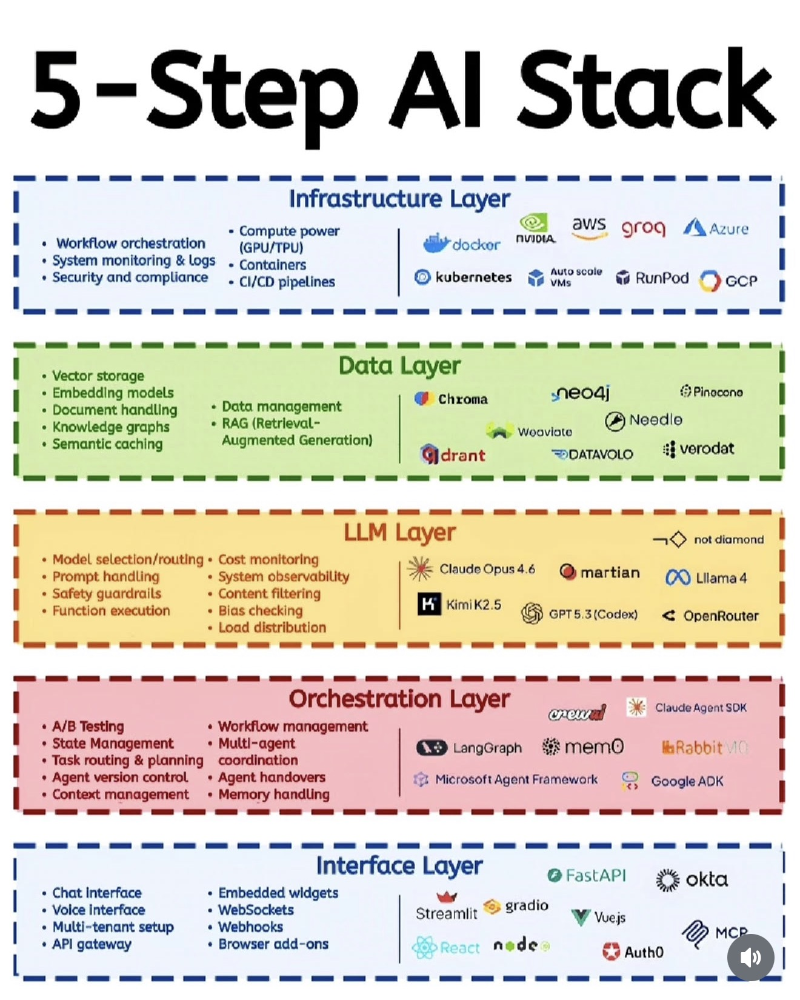

▸ AI 스택 5단계 — 인프라부터 인터페이스 / Pandey
▸ L1 INFRASTRUCTURE
인프라
VPS · Cloud · Local — 우리 = Oracle Free + 본판 PC
▸ L2 MODELS
모델
Claude 4.7 · Codex · Haiku 4.5 · Gemini Flash
▸ L3 ORCHESTRATION
오케스트레이션
exec_orch · 워커 풀 · SQLite state · watchdog
▸ L4 TOOLS
도구·MCP
26개 플러그인 · 7 MCP 카테고리 · slash 25개
▸ L5 INTERFACE
인터페이스
Claude Code · 슬래시 · Termius (모바일) · 대시보드